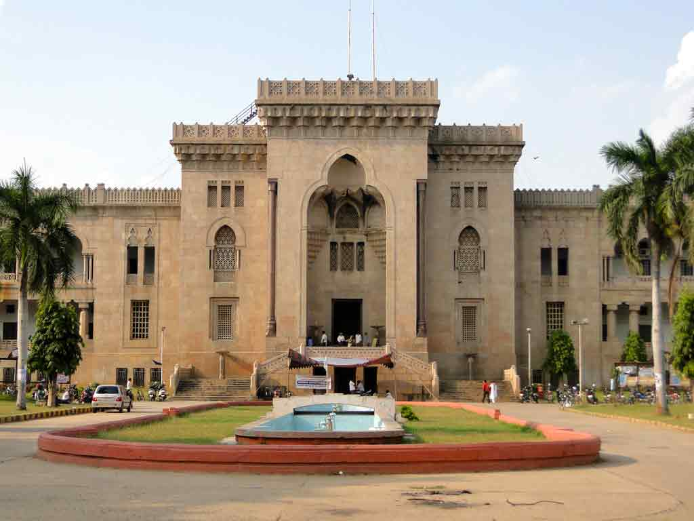
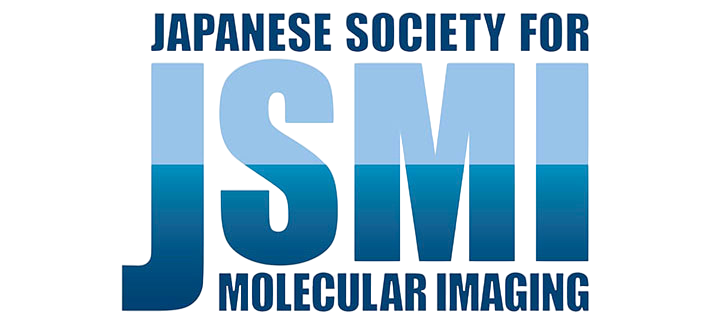
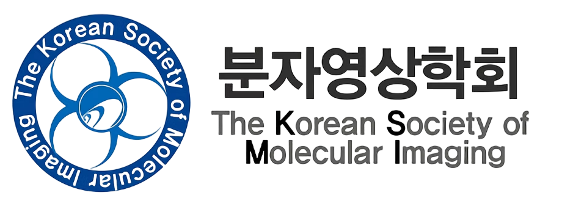
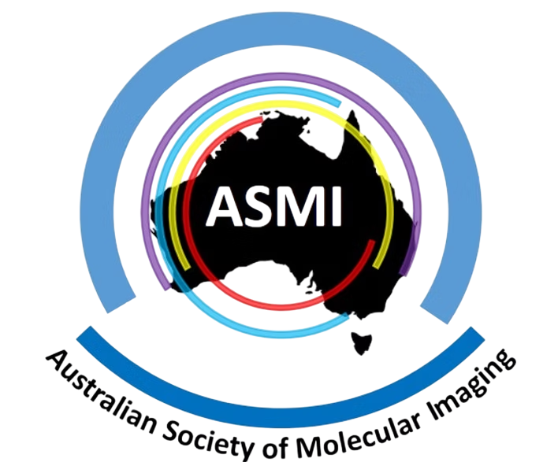

October 26 – 29, 2026
Hyderabad, India
Venue to be announced
An international, Asia-focused molecular imaging conference bringing together global experts, innovators, clinicians, researchers, industry leaders, science administrators, and technology providers. Hosted in Hyderabad, India, the conference serves as a strategic platform to showcase cutting-edge imaging technologies, foster collaboration, and accelerate innovation across Asia and beyond.
The Federation of Asian Societies for Molecular Imaging (FASMI) is a collaborative organisation uniting molecular imaging societies across the Asia-Pacific region. Established in September 2006 as a joint initiative of the founding national societies from Japan, Korea, and Taiwan, FASMI has grown into a dynamic federation encompassing member societies from India, Australia, and beyond.
FASMI advances the field of molecular imaging by fostering communication, collaboration, and education among researchers, clinicians, and scientists. The federation actively advocates for the representation and visibility of Asian molecular imaging communities on the global stage, particularly within the World Molecular Imaging Society (WMIS), and supports interdisciplinary research and technological innovation across the region.
FASMI's biennial meeting is the flagship platform for scientific exchange and collaborative discovery in the Asia-Pacific region. The 2026 edition, hosted in Hyderabad, India, marks a historic milestone as the first joint international molecular imaging conference of its kind on Indian soil, bringing together global leaders in science, medicine, and industry.
The Molecular Imaging Society of India (MISI) is a vibrant, multidisciplinary organisation dedicated to advancing multi-modality molecular imaging across the Indian subcontinent. It unites a diverse community of professionals — clinicians, scientists, engineers, and industry leaders — on a common platform committed to both basic and translational research.
Officially inaugurated in 2014, MISI serves as the Indian affiliate of the World Molecular Imaging Society (WMIS). The society fosters knowledge exchange and innovation through its active monthly webinar series, collaborative research initiatives, and engagement with global imaging networks. MISI is deeply invested in nurturing the next generation of molecular imaging scientists, providing early-career researchers with mentorship and opportunities to connect with leading international experts.
MISI is committed to translating cutting-edge imaging technologies into meaningful healthcare outcomes across India and the broader Asia-Pacific region. As the host society for the FASMI Biennial Meeting 2026, MISI is proud to bring this landmark international conference to Hyderabad, reinforcing India's growing role in the global molecular imaging community.

Established in 1918, Osmania University is one of India's premier institutions of higher education, recognised for its longstanding commitment to academic excellence, interdisciplinary research, and innovation. Located in Hyderabad, the university has made significant contributions to science, engineering, medicine, and technology, fostering a vibrant environment for research and global collaboration.
The Department of Biomedical Engineering, Osmania University is dedicated to advancing healthcare technologies through interdisciplinary education and research at the interface of engineering, medicine, and life sciences. With active research initiatives in medical imaging, biomedical instrumentation, AI-driven healthcare, and translational medicine, the department is proud to host the Federation of Asian Societies for Molecular Imaging (FASMI) Biennial Meeting 2026, bringing together leading scientists, clinicians, researchers, and industry experts from around the world to promote innovation and collaboration in molecular imaging and biomedical sciences.
Partner societies across the Asia-Pacific region bring their collective expertise and networks to FASMI 2026, united by a shared commitment to advancing molecular imaging.

Japanese Society of Molecular Imaging
Korean Society of Molecular Imaging
Australian Society of Molecular ImagingInternationally renowned experts sharing the latest advances in molecular imaging.
Interactive training sessions focused on emerging imaging technologies and techniques.
Dedicated programmes for early-career researchers with mentorship opportunities.
High-level discussions with science administrators and government officials.
A special tribute lecture honouring the pioneer of molecular imaging — a cornerstone of the conference celebrating his contributions to the field.
Connect with MedTech, Pharma, CROs, and allied industry leaders in focused networking events.